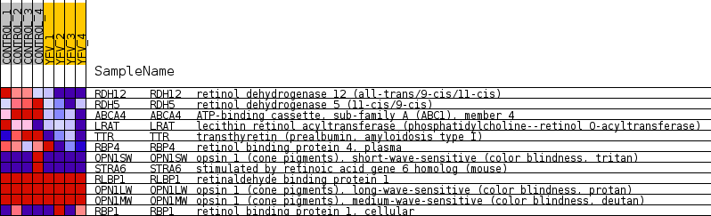
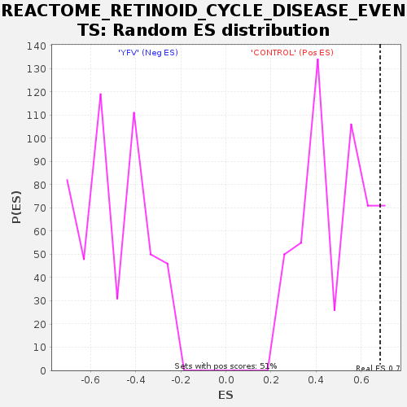

Profile of the Running ES Score & Positions of GeneSet Members on the Rank Ordered List
| Dataset | MATRIZ_GSE99081_collapsed_to_symbols.gsea_CLASE_99081.cls#CONTROL_versus_YFV |
| Phenotype | gsea_CLASE_99081.cls#CONTROL_versus_YFV |
| Upregulated in class | CONTROL |
| GeneSet | REACTOME_RETINOID_CYCLE_DISEASE_EVENTS |
| Enrichment Score (ES) | 0.68323153 |
| Normalized Enrichment Score (NES) | 1.3767331 |
| Nominal p-value | 0.11500975 |
| FDR q-value | 1.0 |
| FWER p-Value | 1.0 |
| SYMBOL | TITLE | RANK IN GENE LIST | RANK METRIC SCORE | RUNNING ES | CORE ENRICHMENT | |
|---|---|---|---|---|---|---|
| 1 | RDH12 | retinol dehydrogenase 12 (all-trans/9-cis/11-cis) | 307 | 0.944 | 0.2165 | Yes |
| 2 | RDH5 | retinol dehydrogenase 5 (11-cis/9-cis) | 390 | 0.881 | 0.4313 | Yes |
| 3 | ABCA4 | ATP-binding cassette, sub-family A (ABC1), member 4 | 552 | 0.804 | 0.6221 | Yes |
| 4 | LRAT | lecithin retinol acyltransferase (phosphatidylcholine--retinol O-acyltransferase) | 2427 | 0.423 | 0.6121 | Yes |
| 5 | TTR | transthyretin (prealbumin, amyloidosis type I) | 2775 | 0.371 | 0.6832 | Yes |
| 6 | RBP4 | retinol binding protein 4, plasma | 4822 | 0.173 | 0.6003 | No |
| 7 | OPN1SW | opsin 1 (cone pigments), short-wave-sensitive (color blindness, tritan) | 6312 | 0.052 | 0.5215 | No |
| 8 | STRA6 | stimulated by retinoic acid gene 6 homolog (mouse) | 6673 | 0.028 | 0.5062 | No |
| 9 | RLBP1 | retinaldehyde binding protein 1 | 7682 | 0.000 | 0.4441 | No |
| 10 | OPN1LW | opsin 1 (cone pigments), long-wave-sensitive (color blindness, protan) | 8944 | 0.000 | 0.3664 | No |
| 11 | OPN1MW | opsin 1 (cone pigments), medium-wave-sensitive (color blindness, deutan) | 8945 | 0.000 | 0.3664 | No |
| 12 | RBP1 | retinol binding protein 1, cellular | 13243 | -0.333 | 0.1846 | No |

